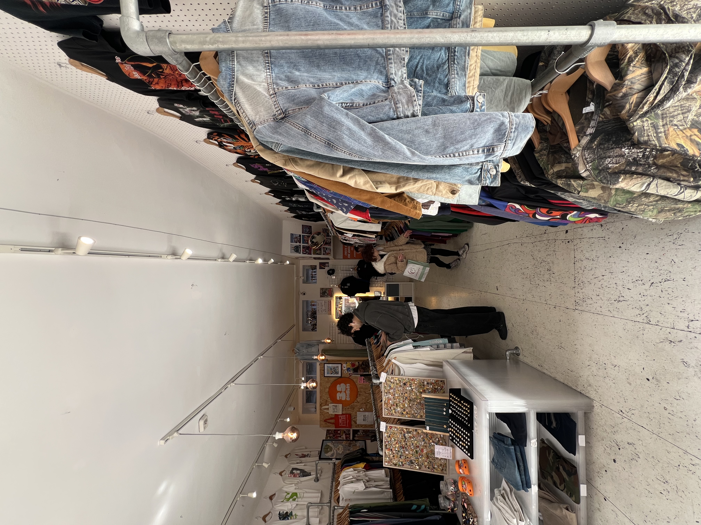
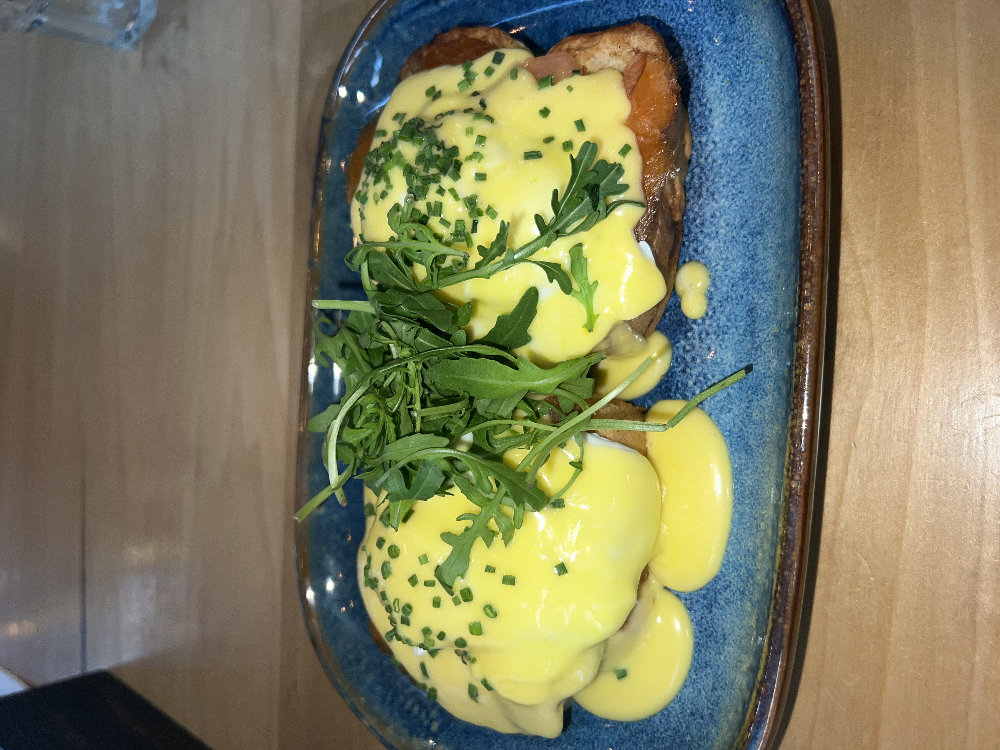
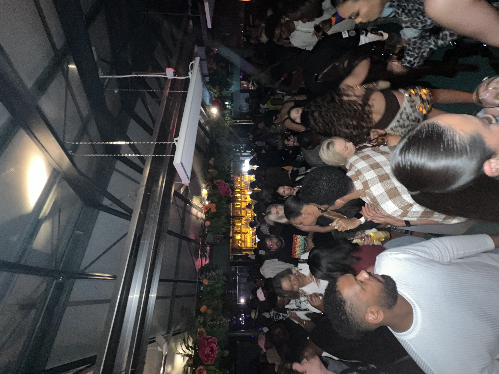

The Week in Nkwa's Words
"Relaxing and soothing to say the least. The weekend trip to Galway was a solid break away from Dublin."
Week's Itinerary
Thrifting + Fade Street Flea Market
Window thrifting at Thrity Five. Bought room sprays in the Fade Street Flea Market at the Market Bar.
ShoppingNational History Museum
Went to the museum after class was over for the day.
ExploringIrish Wheelchair Association
Visited the Irish Wheelchair Association to understand the importance of accessibility for the handicapped.
VolunteeringJay Kays Cafe
Ate brunch at JK Cafe following class.
FoodEPIC The Irish Emigration Museum
Wandered through the EPIC Museum following class.
ExploringGalway: The Dough Bros
Left Dublin in the morning to arrive in Galway early afternoon. Ate some pizza at The Dough Bros for dinner.
Sightseeing + FoodGalway (continued): Ard Bia + Electric Nightclub
Ate brunch at Ard Bia and spent my night at Electric with some friends.
Food + NightlifePhotos from the Week


